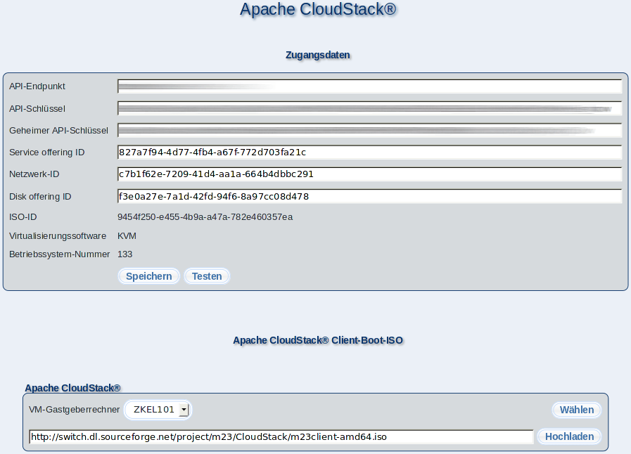

In diesem Dialog können Sie Einstellungen für Apache CloudStack vornehmen.

Unter ''Zugangsdaten'' nehmen Sie einige grundlegende Einstellungen vor, damit eine Verbindung zum Apache CloudStack-Service hergestellt werden kann. Diese Parameter erhalten Sie von Ihrem Apache CloudStack-Betreiber oder aus Ihrer eigenen Apache CloudStack-Installation.
Unter ''API-Endpunkt'' geben Sie die Adresse (z.B. https://mein-server/client/api ) für die Kommunikation zum Apache CloudStack-Service an. Für den Zugriff benötigen Sie außerdem einen API-Schlüssel und einen geheimen API-Schlüssel, welche Sie unter ''API-Schlüssel'' und ''Geheimer API-Schlüssel'' eintragen.
''Service offering ID'' (CPU und RAM), ''Netzwerk-ID'' (virtuelles Apache CloudStack-Netzwerk) und ''Disk offering ID'' (virtueller Festplattentyp) beschreiben die Werte, mit denen ein neuer m23-Client in Apache CloudStack angelegt wird.
Unveränderlich sind (im Moment) die Auswahl des Bootmediums mit dem die Betriebssysteminstallation durchgeführt wird ''ISO-ID'', die benötigte Lösung zum Virtualisieren ''Virtualisierungssoftware'' und die Nummer des Betriebssystems ''Betriebssystem-Nummer''.
Mit einem Klick auf ''Speichern'' bzw. ''Testen'' speichern Sie die Konfiguration, wobei der 2. Button zuvor einen Verbindungstest durchführt und nur speichert, wenn kein Fehler vorliegt.
Unter ''Apache CloudStack Client-Boot-ISO'' wählen Sie die Apache CloudStack-Zone (''VM-Gastgeberrechner'') aus, in die (falls noch nicht geschehen) das m23-Client-Boot-ISO hochgeladen wird. Starten Sie den Upload mit einem Klick auf ''Hochladen''. ''ISO-ID'' wird nach dem Hochladen automatisch angepaßt.
Die Informationen werden in der Datei ''/m23/inc/CloudStackConf.php'' auf dem Server abgelegt, die Sie auch mit einem Texteditor bearbeiten können.
Unterabschnitte
root
2019-06-03